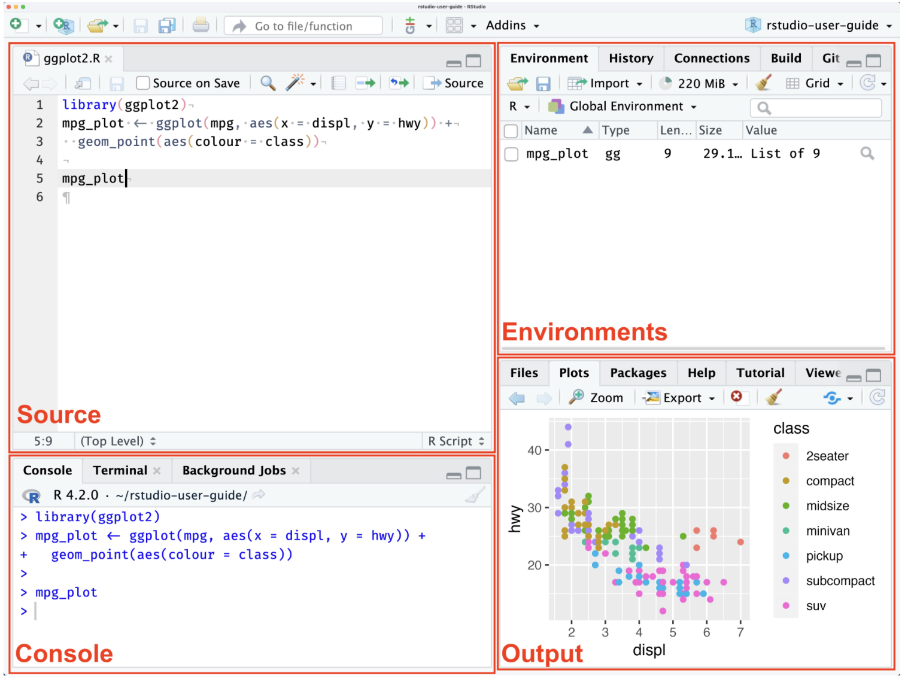
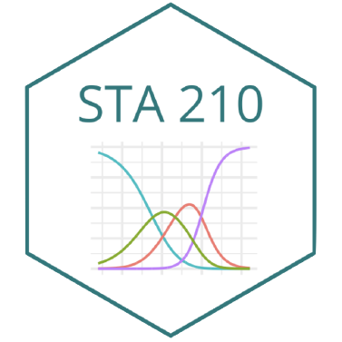

[1] "Hello World!"[1] "Hello World!"POL 051 - Summer Session 1 2026

| Day | Time | Location | |
|---|---|---|---|
| Lectures | Mon, Tue & Wed. | 12:10 pm - 1:50 pm | Hoagland Hall 168 |
| Discussion/Lab | Thu | 12:10 pm - 1:50 pm | Teaching and Learning Complex 2212 |
| Office Hours | Tue | 2:00 - 4:00 PM | Kerr Hall 569 |
All materials for this course are free and online. You will do all of your analysis with the open source (and free) programming language R and RStudio.
Textbook: Sumner, Jane L. R for Political Science Research : An Introduction for Absolute Beginners. 1st ed. 2024., Springer Nature Switzerland, 2024, https://doi.org/10.1007/978-3-031-75853-9.
R and R Studio:
Course Website:
Prepare: Introduce new content and prepare for lectures by completing the readings (and sometimes watching the videos)
Participate: Attend and actively participate in lectures and labs, office hours, team meetings
Practice: Practice applying statistical concepts and computing with application exercises during lecture, graded for completion
Perform: Put together what you’ve learned to analyze real-world data
| Category | Percentage |
|---|---|
| Application Exercises (Particpation) | 15% |
| Labs | 35% (7% x 5) |
| Final Project | 50% |
Make a Research Question, Pick a data set, and do analysis. That is your final project.
The goal of the final project is for you to apply the skills you have been learning throuhg out the quarter and apply to real life data to answer a question YOU HAVE MADE.
You will be split into teams, I recommend sitting with these teams during lecture and labs.
Learn More on the Project Description page on the course website.
It is my intent that students from all diverse backgrounds and perspectives be well-served by this course, that students’ learning needs be addressed both in and out of class, and that the diversity that the students bring to this class be viewed as a resource, strength and benefit.
If you believe you have a disability requiring an accommodation or would like additional information about the resources available for students with disabilities, please visit the UC Davis Student Disability Center website at sdc.ucdavis.edu.
Students must contact me about any accommodations.
Outside Resources - The Student Academic Success Center is a campus wide resource assisting students by helping them improve in study skills, academic writing, and other specific topics
I am aware that there is a large amount of code is available online, and many tasks may have solutions posted
Unless explicitly stated otherwise, this course’s policy is that you may make use of any online resources (e.g. RStudio Community, StackOverflow, etc.) but you must explicitly cite where you obtained any code you directly use or use as inspiration in your solution(s).
Any recycled code that is discovered and is not explicitly cited will be treated as plagiarism, regardless of source.
AI is NOT allowed for usage in this classroom.
You may not use artificial intelligence tools such as ChatGPT, Gemini, Claude, Grok, etc. to complete academic work
Cheating and plagiarism will be evaluated and disciplined according to University policy.
For information on academic integrity, please read: http://cai.ucdavis.edu/aip.html.
You are responsible for understanding and following all aspects of University policy on academic integrity; ignorance is not an excuse.
Ask if you’re not sure if something violates a policy!
R is a coding language language and environment built for statistical computing and graphics that includes a large variety in statistical and graphical techniques.
As political scientists R is an effective way to store and handle data, and a large selection of data analysis tools including graphing tools in a coherent and effective language.
The majority of users will use Rstudio an IDE or integrated development environment to write the code and see outputs.
Think of R as a language it has: vocabulary, punctuation, grammar, and syntax
R is a language you can use to speak to your computer to tell it how to manage and visual data
R is freely maintained by an international team of developers and is available through The Comprehensive R Archive Network.
Follow the instructions to download R.
If you are using an older computer or iPad, go to Using Posit Cloud for R in the FAQ page.
Go to The Comprehensive R Archive Network webpage:
To install R on Windows, click the “Download R for Windows” link.
To install R on a Mac, click the “Download R for Mac” link.
One way to picture what RStudio does is to compare it to Microsoft Word, a software application that allows us to write documents.
RStudio, instead of being a platform to write text, helps us write in the coding language R. Follow the instructions below to download RStudio.
Go to the Posit RStudio Desktop page.
To install for Mac:
Scroll to the button that says “Install R on a Mac,” and click the “Download R for Mac OS 13+” link.
To install for Windows:
There are four primary quadrants in RStudio:

RStudio Layout
[1] "Hello World!"[1] "Hello World!"[1] 5[1] 75[1] 1000R at its core is a gigantic calculator, so let’s practice doing basic calculations.
R at its core is a gigantic calculator, so let’s practice doing basic calculations.
In R, we save our data in what we call objects! Objects store information about different types of elements. If you know any other coding languages, they typically call these variables.
print() is a function that ‘prints’ out an output from an object.
R functions are like the verbs of the R coding language, they tell your computer what action to make with sets of information.
There are 6 types of data in R that are important to know, but the essential ones are logical, numeric, and character.
In this class we are going to focus on only three: Logical, Numeric, and Characters.
Packages are collections of R functions, data, and code compiled in a well-defined format
Some packages come pre-installed in R.
However, the majority do not, so you need to install them first using the r function install.packages
After installing the packages we need to “attach” the package.
You can do this by using the function library() and the name of the package.
Submit a screenshot or photo of RStudio running on your computer with the code from class today on your computer.

Comments
It’s also important to annotate your code. It will help you write notes and explain what you are doing. To annotate your code, you will use the number sign #: